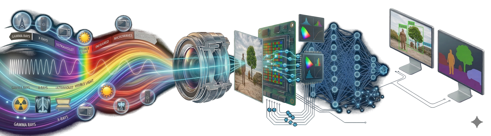
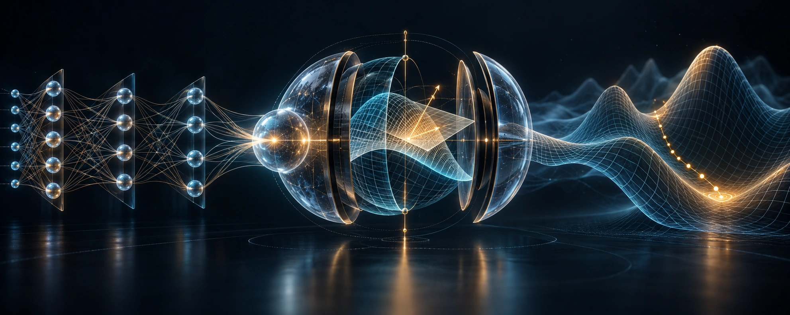

Modern Computer Vision (MCV)
00970202 · Technion · Faculty of Data and Decision Sciences

00970202 · Technion · Faculty of Data and Decision Sciences

Student-led graduate seminar · Technion · Faculty of Data and Decision Sciences
Under construction